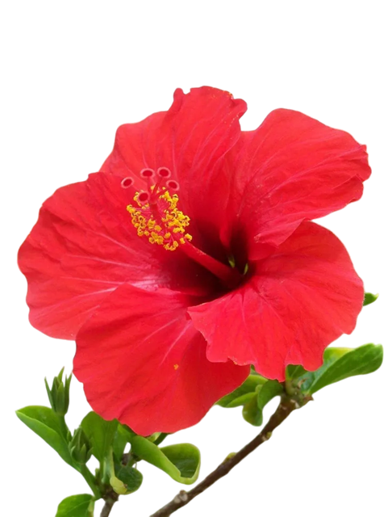

Video editor · Filmmaker · Sound engineer · Percussionist · DJ · Yoga & rhythm teacher
Twenty seven years of cutting, mixing and shipping under deadline. Daily news and prime time at Nova TV and RTL, documentary work in Auroville, India, live sound and stage from the other side of the booth, and a full stack of self written tools to make all of it faster.
A career is not a list, it is a timeline. Television on the video tracks, sound and rhythm on the audio tracks, systems underneath. Select any clip to load it.
Daily cutting for news and prime time formats on Avid Media Composer and iNEWS.
Hover or tap a clip to inspect it
One person who covers picture, sound and delivery, so a production does not need three separate bookings for a small crew job.
Multicam capture, live stream setup, on site audio, content for LED walls, and the aftermovie cut and graded the same week.
Cutting to a hard transmission time, every day, for seventeen years. Editing, sound, colour and delivery in one pair of hands.
This page is an example. A single static file, no framework, no build step, bilingual dictionary compiled into the page itself.
National broadcaster, Zagreb. Daily news and prime time formats: Provjereno, IN Magazin, Gotovčevi, Operacija Kajman, Ostani živ, Farma.
Documentary and event production for Svaram, Aurora's Eye Films, AuroFilm, Bharat Nivas, Unity Pavilion, Visitors Center, Kalabhumi, Integral World and Aware. Camera, edit, live streams, graphic design and social media.
Entertainment formats: Farmer Wants a Wife, Croatia's Next Top Model, Punom parom, Policijska patrola.
Production house and advertising agency, Zagreb. Commercial edit, sound recording and mix, assistant editor on advertising films.
Regional broadcaster. Editing and music selection on Đir with Davor Jurkotić, the channel's most watched entertainment series. Started as radio technician and disc jockey in 1998.
Independent filmmaking, colour grading, event coverage and post production for clients in Croatia and abroad. Currently also external editor on IN Magazin.
Broadcast software on one side, code on the other. The second half is why the first half is fast.
Self built and in daily use: an Avid assistant that automates repetitive edit suite work, a transcription and translation web app, a text to speech reader, and a live public transport router built on open GTFS data.

The reason a music video, a festival aftermovie or a live set works is timing. I did not learn timing only in an edit suite. I learned it on drums, in front of a dance floor, and on a yoga mat.
World organic house and ethno electronic sets, from ecstatic dance floors to beach bars and festival stages. Reading a room, building an arc, and understanding what a technical crew needs from the booth, because I have stood on both sides of it.
Trained with percussion masters in Croatia, Slovenia and Israel, and with visiting West African rhythm virtuosos. Currently studying frame drum with Yshai Afterman, one of the leading frame drum players and teachers working today.
Founder of a rhythmic dance ensemble built on one idea: a group of people who have never played together can lock into one pulse within minutes, if the rhythm is taught through the body rather than through notation. Community drumming, workshops and live performance.
Yoga and rhythm teacher, and founder of the Sun Moon Yoga method, which pairs the active solar side of practice with the receptive lunar side, using breath and drum pulse to move between them. Grounded in seven years in Auroville and in Sri Aurobindo's integral yoga, plus nada yoga and the study of sound.
Cutting picture and playing rhythm are the same craft. Both are decisions about where the next beat lands.
Marko Boško · Mantreshwar
Based in Zagreb, ready to travel, comfortable on a festival site at four in the morning and in an edit suite at nine. Full CV, showreel and references on request.